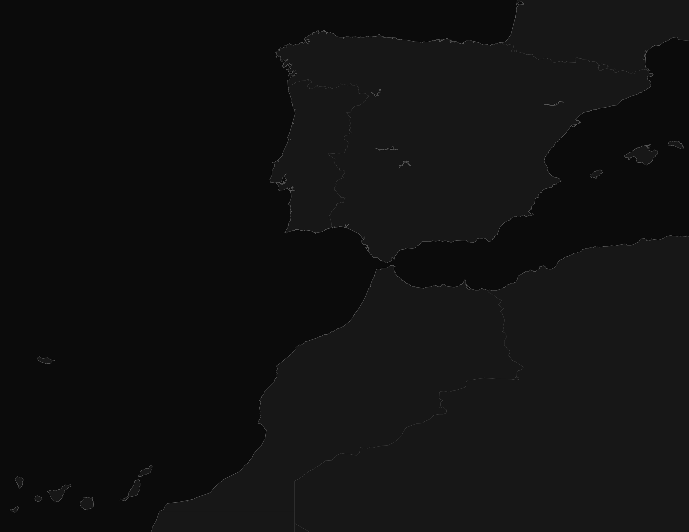
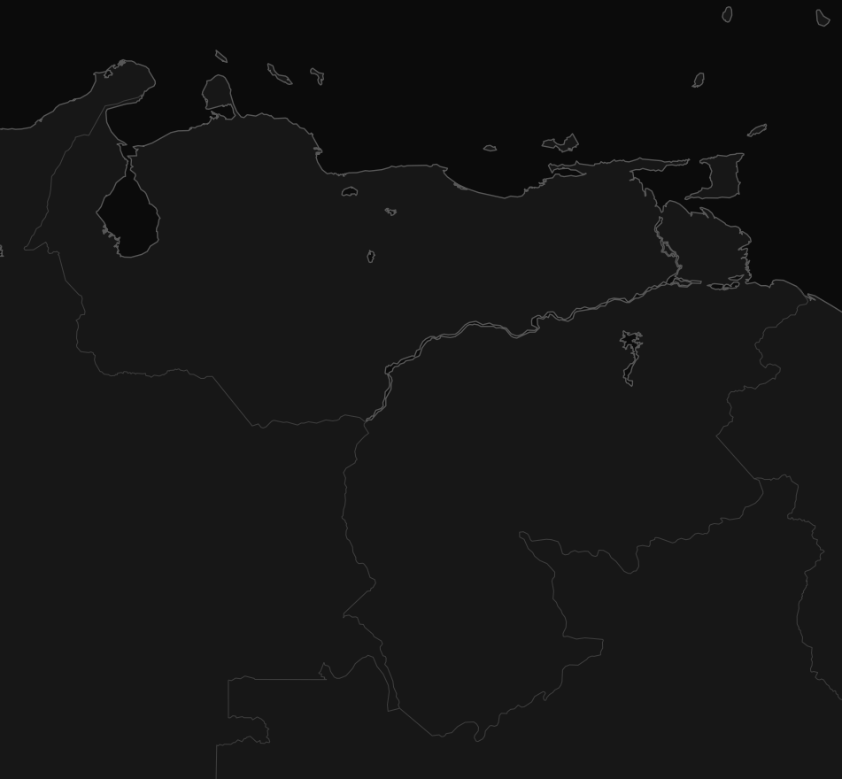

I design what happens between the first idea and the finished space.
I work across design, technical development and production, right now as a designer at Maison Caligari. I like getting to know a project inside out, from the first site survey to the workshop and the final install.
This atlas follows the evolution of my work, from architectural drafting in Venezuela to residential design, retail identity and production-led projects across Spain and Portugal.
Good drawings reduce conversations.

Spain & Portugal

Venezuela
LocationWorkPeriodStage
I
Foundations
Venezuela
2015 to 2017
II
Residential design
Asturias and Galicia
2018 to 2020
III
Retail identity
Japon Market 24h
2020 to 2024
IV
Retail production
Ecoalf and fashion retail
2025 to 2026
30+documented project locations
70+automated retail identities
3countries connected by the work
1continuous way of working
VI
How I ended up here
A professional story, not a timeline
I never planned a career that would move between architecture, graphics, retail, production and furniture. It just happened, because every stage made me curious about the next one.
The best detail is the one nobody has to explain on site.
I
Architecture taught me to think through drawings.
I began in Venezuela, working with plans, models and visual presentations. It gave me the technical foundation that still supports the way I work.
II
Moving to Spain made me more adaptable.
I moved between interior design, graphic work and communication, learning how space and identity influence each other.
III
Retail made every decision immediate.
Circulation, stock, visibility, furniture, brand language and installation all have to work at the same time.
IV
The workshop changed the way I design.
Working close to production made me think earlier about materials, thicknesses, transport, assembly and the people responsible for building the project.
V
I am ready for a more international chapter.
I am drawn to Germany and the Netherlands because of the way design, industry, craft and experimentation are connected.
VII
Journal
Notes from the work
This is not a blog. It is a place to record the practical things that rarely appear in a finished portfolio.